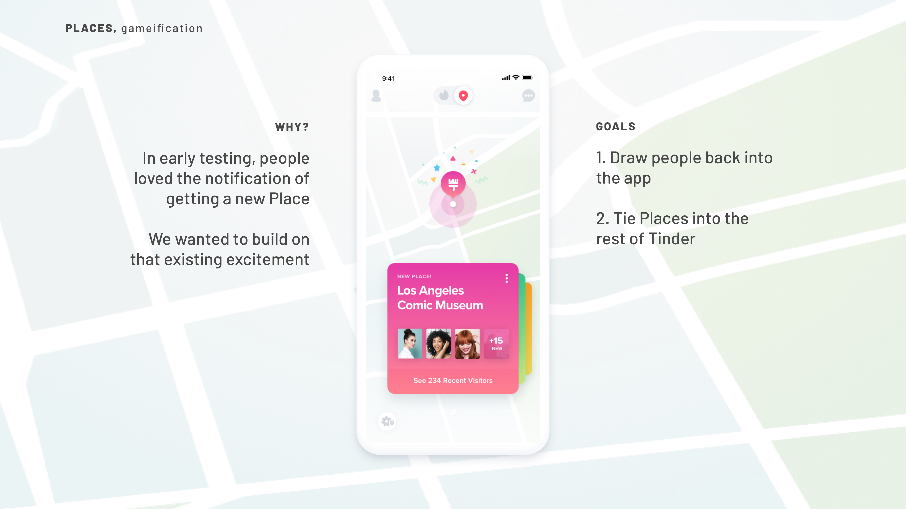
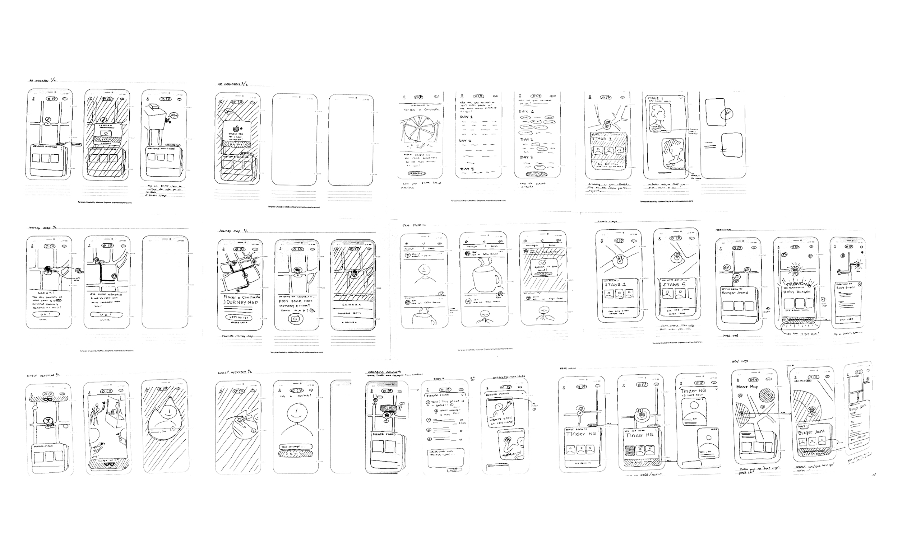
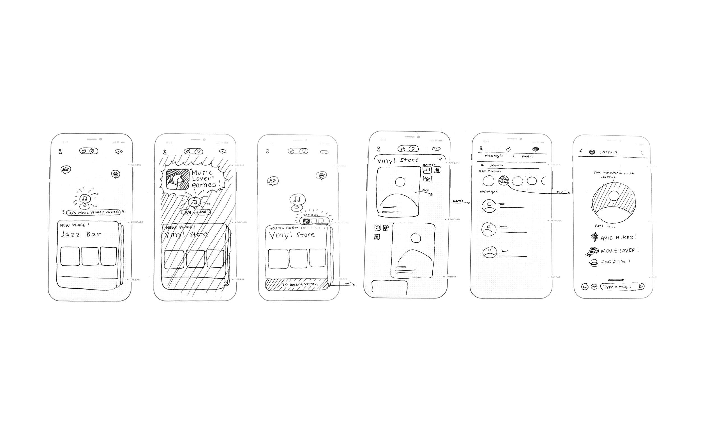
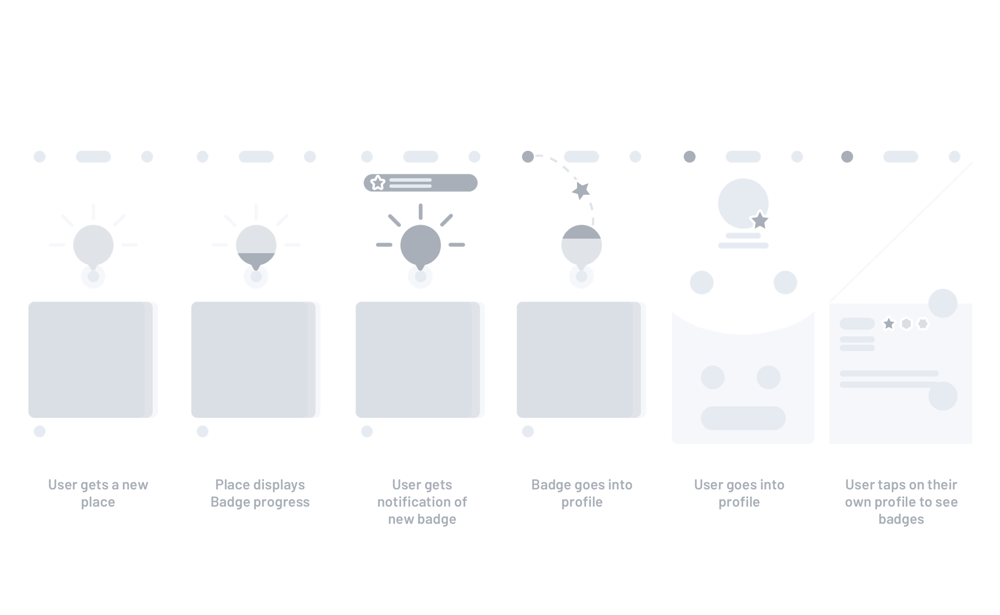
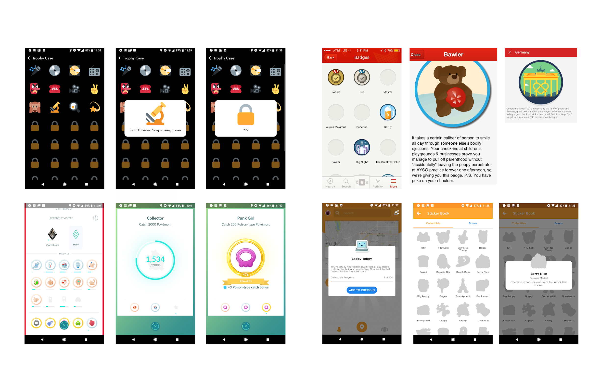
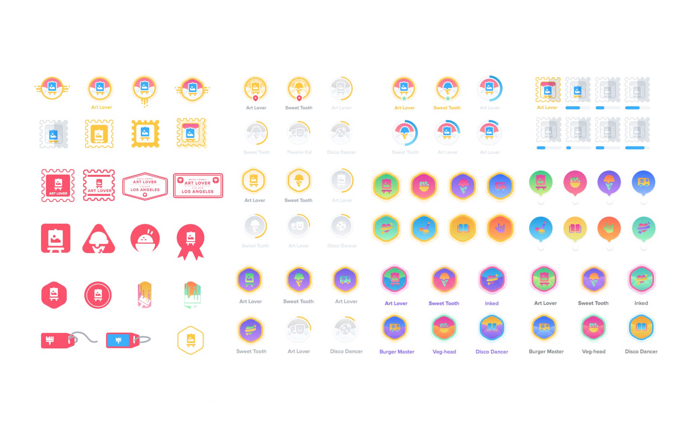
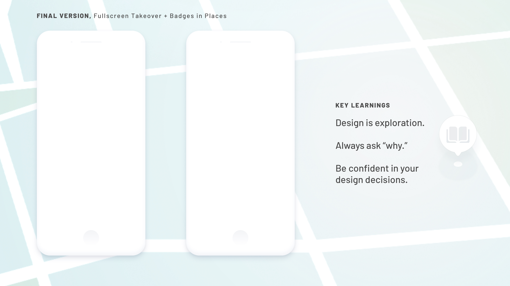

Version 1—badges in profile
After a user visits enough art galleries or venues, for example, they earn a Places badge which they can view in their profile settings and other users can see when they view their profile.
These badges can say more about the user without them having to say it themselves. And the badge feels more legitimate because it is earned through the user's actions.
After a user visits enough art galleries or venues, for example, they earn a Places badge which they can view in their profile settings and other users can see when they view their profile.
These badges can say more about the user without them having to say it themselves. And the badge feels more legitimate because it is earned through the user's actions.
Final Version—fullscreen takeover + badges in Places
After watching people interact with the prototype, I received feedback that the achievement modal could be more grand and exciting rather than contained in a modal. I made it a fullscreen takeover instead so it would feel more special.
People also found it confusing to navigate to Profile to see Places badges. Instead, I added a page within Places for people's badges so they felt the experience had more continuity.
After watching people interact with the prototype, I received feedback that the achievement modal could be more grand and exciting rather than contained in a modal. I made it a fullscreen takeover instead so it would feel more special.
People also found it confusing to navigate to Profile to see Places badges. Instead, I added a page within Places for people's badges so they felt the experience had more continuity.
I also mocked up the experience of when people are viewing others' profiles. They see the badges (and behaviors) they have in common.
Mutual badges communicate the places and activities both love to engage in—making people feel more real without any more effort on the user's side.
Mutual badges communicate the places and activities both love to engage in—making people feel more real without any more effort on the user's side.
